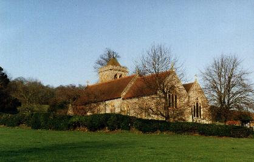
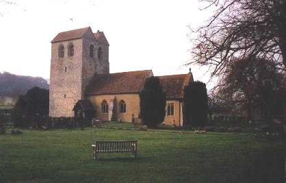
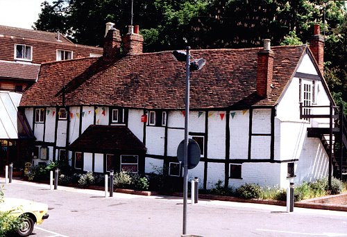
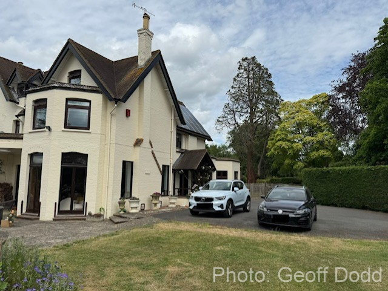
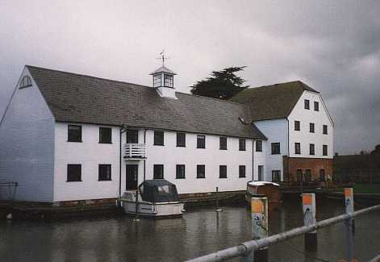
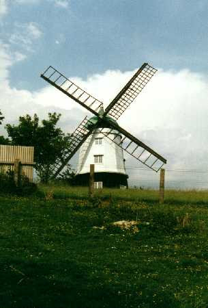
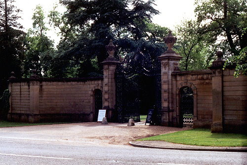
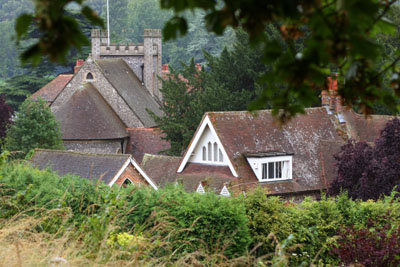

E1: Hughenden Church,
A4128, High Wycombe, Buckinghamshire

THE SECRET SERVICE
(Ken
Turner: Autumn 1968)
Father Unwin's parish church in the title sequence also; seen in many
episodes.
E2: Fingest Church, Fingest, Buckinghamshire

THE
NEW AVENGERS: House Of
Cards (Ray
Austin: Spring 1976)
Perov and Cartney on their way to Steed’s place (Skirmett
Road
converges with Dolesden Lane).
(Identified by Sam
Denham, February 2013)
THE
NEW AVENGERS: To Catch
A Rat (James
Hill: Summer 1976)
Cledge (Barry Jackson)
arrives at the church in his
search for Gunner.
He enters the church with his gun only to find two ladies arranging
flowers. Gambit (Gareth
Hunt) and Purdey (Joanna
Lumley) arrive in
their Range Rover and repeat Cledge's mistake.
E3: Cookham, Buckinghamshire

THE
SAINT: The Talented
Husband (Michael Truman: June 1962)
Simon Templar (Roger
Moore) arrives at The Ferry
Inn at Cookham to
visit Madge Clarron who lives in a house on the opposite side of the
river. On the way to the inn, he nearly knocks over the Clarron's
housekeeper, Mrs Jafferty (Derek
Farr), on the High
Street. Later Simon
drives John Clarron (Derek
Farr) in his Volvo to
Cookham Station.
Clarron makes a point of asking the ticket collector (Howard
Douglas)
from which station the return train will be leaving. Later Mrs Jafferty
leaves Cookham from the same station.

E4: West WycombeCaves, A40, West Wycombe, Buckinghamshire
MAN
IN A SUITCASE: Three
Blinks of the Eyes (Charles
Crichton: 1967)
McGill parks his car in the caves car park and makes his way up to the
Mausoleum watched by Bernard (Drewe
Henley).
Films:
TO THE DEVIL A DAUGHTER
(1976)
E5: Hambleden Mill, Mill End, nr. Henley-on-Thames, Buckinghamshire

SABER
OF LONDON: Dilemma for
Harry (Paul
Maxwell: 1957)
Saber is on a picnic by the Thames with Carol and Bob.
SABER
OF LONDON: The Killer
and the Kid (1959)
The Thames runs past Netheravon.
MAN
IN A SUITCASE: The
Revolutionaries (Peter
Duffell: Late 1967)
Colonel Haidar (Ferdy
Mayne) and Casim (Nik
Zaran) locate the Swedish
hideout of Dr. Maza (Hugh
Burden) and his daughter,
Chantal (Sonia
Fox). They escape when Yuseef (David Cargill),
Maza's bodyguard, chases
them off. McGill (Richard
Bradford) is called to
the mill so that he
can escort Chantal back to England. Later, when Haidar captures Maza,
Nuri (David Sumner)
and Amin (Louis Negin)
arrive to execute their
father's killer. In the ensuing battle Nuri is killed.
E6: Turville, Buckinghamshire

THE
NEW AVENGERS: House Of
Cards (Ray
Austin: Spring 1976)
Purdey (Joanna Lumley)
and Gambit (Gareth
Hunt) follow Perov's
helicopter in Purdey's yellow MGB. They drive through the village and
watch the helicopter land by the windmill as Perov (Peter
Jeffrey) sees
Steed (Patrick Macnee)
park his car by the mill and
enter. Steed enters
to check that Professor Vasil (Gordon
Sterne) is
safe and then opens
fire with a pistol. Steed, disguised as the professor, leaves the
windmill and is shot by Perov. Gambit and Purdey arrive on the scene.
While Gambit takes Perov's helicopter, Purdey tackles Perov and
eventually knocks him out.
THE
NEW AVENGERS: The Tale
of the Big Why (Robert
Feust: August 1976)
After Irene Brandon shoots out the tyres of the Range Rover, Mike
Gambit (Gareth Hunt)
and John Steed (Patrick
Macnee) are left walking
cross country looking for a road (walking
up hill towards
Turville
Mill).Mike and Steed accept a lift in a passing farm
vehicle (which
drives along Holloway Lane).
THE
NEW AVENGERS: K is for
Kill Part One: The Tiger Awakes (Yvon Marie
Coulais:
Summer 1977)
Establishing shot of "A village in England, July 25th 1965, 12:31pm."
Television:
THE GLAM METAL DETECTIVES
(1995)
THRILLER: Only A
Scream Away (1973)
THE VICAR OF DIBBLEY
(1995-)
GOODNIGHT MR.TOM
(1998)
Film:
CHITTY CHITTY BANG
BANG (1968)
E7: Cliveden House Gates, Cliveden Road, Buckinghamshire

THE
SECRET SERVICE: To
Catch a Spy (Ken
Turner: Autumn 1968)
Humphrey and Grey arrive in their white Jaguar at Kew Gardens and are
followed in by Father Unwin in Gabriel.
E8: Wycombe Air Park (Booker), Marlow, Buckinghamshire
THE
NEW AVENGERS: Cat
Amongst the Pigeons (John
Hough: June 1976)
Steed (Patrick Macnee),
Gambit (Gareth
Hunt) and Purdey (Joanna
Lumley)
visit the airport to make sure that Rydercroft (Basil Dignam)
is not
killed at noon.
(Identified by Robert
Truman, August 2003)
E9: Remenham, Oxfordshire

THE
NEW AVENGERS: House Of
Cards (Ray
Austin: Spring 1976)
Purdey (Joanna Lumley)
tracks down Suzy Miller’s (Annette
Andre) house
in the country (The Old
School House). Her arrival
is witnessed by
Perov (Peter Jeffrey)
and Cartney (Lindon
Brook).
(Identified by Margaret
Field, July 2007)
E10: Ibstone, Buckinghamshire
THE
NEW AVENGERS: House Of
Cards (Ray
Austin: Spring 1976)
Perov attempts to follow Steed’s Jaguar in a helicopter. Steeds Jaguar
passes through a crossroads with a telephone box (Grey’s Lane
and
Ibstone Road crossroads). Steeds Jaguar passes an L-shaped
farm
building (Chiltern
Cottages). Steeds Jaguar passes
cottage with a
swimming pool behind it (Ibstone
Road, swimming pool
redeveloped).
(Jo-Anne Stuart, August
2007)
E11: Cores End Road Railway Crossing, Bourne End, Buckinghamshire
THE
SAINT: The Fast Women
(Leslie Norman:
September 1966)
After being chased from his hotel, Karl Tordoff drives his car through
a railway crossing just in time to lose Simon Templar and Paddy who are
following in a Volvo.
(Identified by Alan
Field, July 2008)
E12: Middle Assendon, Oxfordshire
THE
NEW AVENGERS: The Tale
of the Big Why (Robert
Feust: August 1976)
After leaving the prison, Bert Brendon drives past this pub he is
followed by Purdey on her motorbike (past the Rainbow Inn
on the B480).
(Identified by James
Webster, September 2009)
E13: Frogmoor, High Wycombe
THE
HUMAN JUNGEL: The
Flipside Man (Sidney
A. Hayers: 1963)
Danny Pace (Jess Conrad)
drives his convertible to
the dance hall on
Bebury Street where he won his record contract. Danny breaks into the
building. Doctor Corder M.D. D.P.M. (Herbert Lom)
arrives to talk to
Danny but ends up calling for an ambulance instead.
(Identified by Alan
Field based on information from Mark O on
the
Britmovei Forum, September 2011)
E14: Malders Lane brickworks, Pinkneys Green, Berkshire (redeveloped)
THE
NEW AVENGERS:
The
Tale
of the Big Why
After leaving the prison, Bert Brandon (George A. Cooper)
drives to a deserted brick works. Purdey (Joanna Lumley)
is close
behind him on her motorbike, but does not arrive soon enough to prevent
Brandon retrieving a package and continuing on his way.
(Identified by Steve
Cann, September 2012)
E15: High Wycombe College of Art and Technology, Queen Alexandra Rd and Abbey Way in High Wycombe (redeveloped as Buckinghamshire New University)
THE
HUMAN JUNGLE
Saint Damian's Hospital in several episodes.
(Identified by Geoff
Dodd, November 2017)
THE HUMAN JUNGLE: Run with the Devil (Vernon Sewell)
THE
HUMAN JUNGLE:
The
24-Hour Man (Robert Day)
After being mugged, Dr Corder, R.M.D., D.P.M, is taken to his own
hospital to recover.
(Identified by Geoff
Dodd, November 2017)
E16: Dropmore House gates, Heathfield Road, Taplow
THE SECRET SERVICE: A Hole In One (Brian Heard: Autumn 1968)